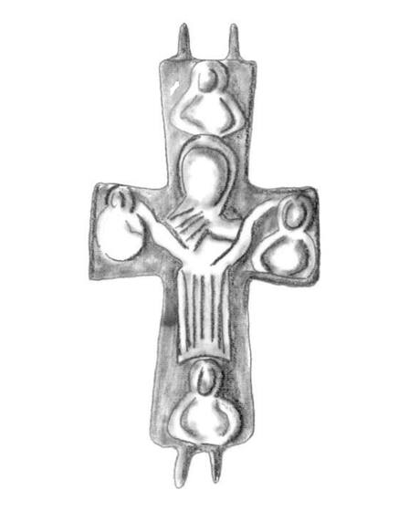

Catalog › CE-0328 · COS2022-IA-11
Encolpion bivalv de bronz, Hârșova, repertoriu IA 6.11
sec. XI (1001–1100) · Hârșova, jud. Constanța, România
double-sided reliquary cross (enkolpion), bronz; c. XI (1001–1100); found at Hârșova, jud. Constanța, România.


Identificare
- Categorie
- Encolpion bivalv (relicvar)
- Material
- Bronz
- Tehnică
- Turnare în relief
- Dimensiuni
- Î 76 × L 43 mm
Iconografie
- Avers
- Răstignirea (Hristos în colobium)
- Descriere avers
- Descrierea tipului IA, după autor: Hristos răstignit, cu capul ușor plecat spre dreapta, îmbrăcat în colobium căzut în falduri până la glezne, picioarele desculțe; la capetele celor patru brațe ale crucii, busturile a patru personaje biblice, identificate în unele cazuri cu Sfânta Maria și Sf. Ioan Evanghelistul.
- Revers
- Maica Domnului Orantă; Evangheliști în medalioane
- Descriere revers
- Descrierea tipului IA, după autor: Sfânta Maria în poziție orantă, în veșmânt care acoperă complet trupul; la extremitățile celor patru brațe, busturile celor patru evangheliști.
Datare și atribuire
- Datare
- sec. XI (1001–1100)
- Tipologie
- Cosma 2022, tip IA
Descoperire
- Localitate
- Hârșova
- Regiune
- jud. Constanța
- Țară
- România
- Context
- Necunoscut
- Coordonate
- 44.6846° N, 27.9514° E
- Precizia locului
- Doar localitatea
Păstrare și referințe
- Bibliografie
- C. Cosma, Tipuri de cruci relicvar bizantine din bronz cu figuri în relief, descoperite pe teritoriul României, în „Crisia”, LII, 2022, p. 111–140 (studiu p. 111–129, planșe p. 130–140) [Cosma 2022], p. 122, repertoriu IA 6.11, reprodusă la Pl. 5/2 (p. 134). Piesa citată în repertoriu după: N. Harțuche, F. Anastasiu, Catalogul selectiv al colecției de arheologie a Muzeului Brăilei, Brăila, 1976, p. 270–271, nr. 559, fig. 559.
- Figura
- Pl. 5/2
- Planșe
- Cosma 2022, p. 134
- Observații
- Figura din planșă arată o singură față. Colecția și inventarul nu sunt date în sursă. Coordonate: ale localității (aproximative), nu date în sursă. Număr în repertoriul autorului: 6.11 (tip IA).
Citare: Corpus Encolpiorum, CE-0328, Encolpion bivalv de bronz, Hârșova, repertoriu IA 6.11, --root/piese/COS2022-IA-11/ (accesat 2026-10-20).